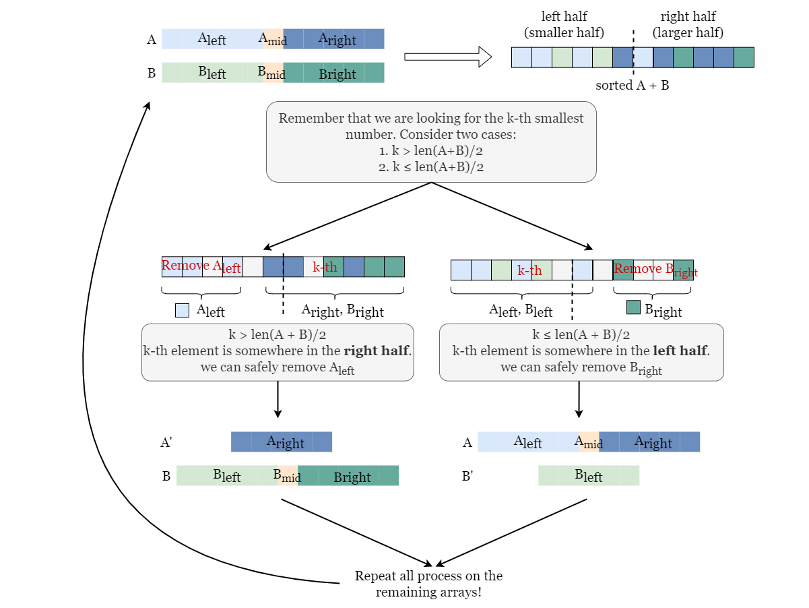
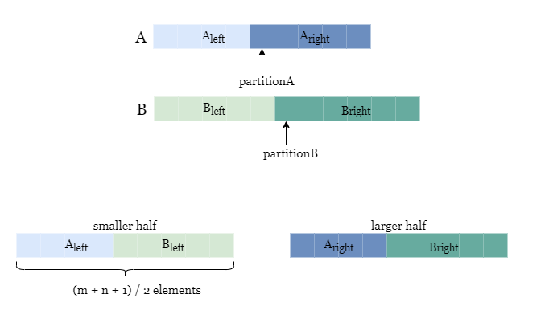
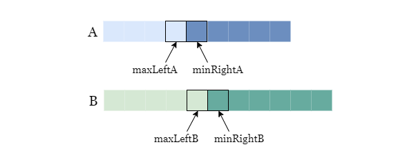

![[LeetCode] 4. Median of Two Sorted Arrays](/images/33/cover.png)
[LeetCode] 4. Median of Two Sorted Arrays
An excellent binary search problem. It’s easy to use brute-force or mergesort to solve it, but the time complexity is specified as $O(log(m+n))$ in the problem.
It’s obvious to think of binary search when noticing the time complexity with “log”, but constructing such a algorithm remains to be a big problem.
Here are three ways to solve the problem:
Method1: O(log(m)*log(n))
As we are going to find the median of the two sorted arrays, which means we are going to find the k-th(or (k+1)-th) of the two arrays, we can use binary search to find the rank of each number in the array.
For example, as we have picked up one single number from array A, we can use binary search to determine how many numbers in array B are smaller than this single number. Then, we can calculate the rank of this number simply, and the time complexity of it is $O(log(n))$ or $O(log(m))$.
But now we are going to find the median, so another binary search is needed. For the first array A, we apply binary search to it. And for each turn, we can calculate the rank of the select number, and move the boundary to left or right after comparing the rank with median rank(i,e., $(n+m+1)/2$).
In this way, we can solve the problem in $O(log(m)*log(n))$.
Method2: O(log(m*n))
The key operations are specified in the following picture:

For every turn of binary search, at least half of one array can be abandoned, thus decreasing the size of the searching space.
Method3: O(log(min(m, n)))
We can only consider about applying binary search in one single array, and now we apply it to the shorter array.
After we determine the partition point of array A($partitionA$), we can calculate the partition point in array B($(n+m+1)/2-paritionA$), show shown in the picture below.

Now we can compare the edge elements.

Here maxLeftA is partitionA, and maxLeftB is partitionB. By comparing these four elements, we can have the following conclusions:
- maxLeftA<=minRightA, maxLeftB<=minRightB, because the array is sorted.
- if maxLeftA<=minRightB, and maxLeftB<=minRightA, then we find the answer.
- if maxLeftA<=minRightB, and maxLeftB>minRightA, we move the binary boundary to right.
- if maxLeftA>minRightB, and maxLeftB<=minRightA, we move the binary boundary to left.
- it’s impossible that maxLeftA>minRightB, and maxLeftB>minRightA.
So we can solve the problem in $O(log(min(m, n)))$.
The code is shown below.
1 | class Solution { |
[LeetCode] 4. Median of Two Sorted Arrays